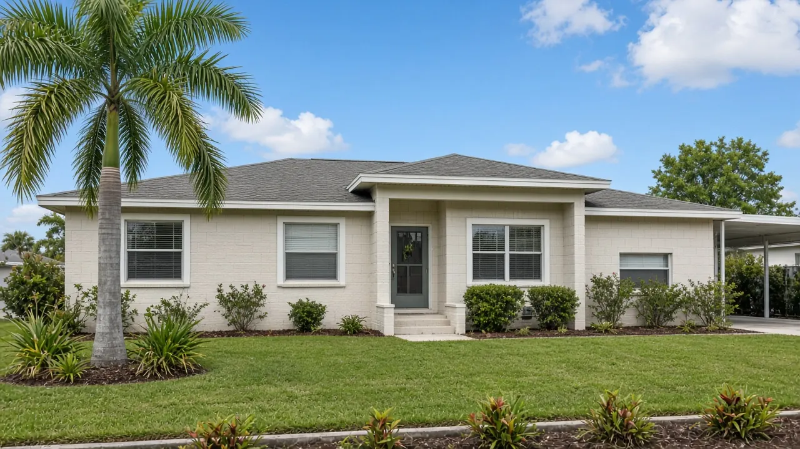

Upcoming county auction
Pinellas County, Florida tax deed sale: November 18, 2026
Online auction Wednesday, November 18, 2026 at 11:00 a.m. at pinellas.realtaxdeed.com. Bidders deposit $200 or 5% of the high bid, whichever is greater, and the balance is due within 24 hours of the advertised sale time.13
Order a Research Pack for a sale parcel
Order by Monday, November 16, 2026 for delivery before the Wednesday, November 18 sale. Packs are emailed within about 4 business hours after payment and a complete address or parcel ID are received.

Sale facts (sourced)
- County: Pinellas County, Florida
- Sale date and time: Wednesday, November 18, 2026 at 11:00 a.m.12 (the Clerk starts online tax deed sales at 11:00 a.m.3)
- Where: Online at www.pinellas.realtaxdeed.com, which also carries the auction calendar13
- Notice: Notices of Application for Tax Deed for this date ran October 9, 16, 23 and 30, 202612
- Deposit: $200.00 or 5% of the highest bid, whichever is greater, placed for each property you may bid on3; the notices say it is nonrefundable and must be deposited prior to sale under F.S. 197.542(2)12
- Clerk tax deed information line: (727) 464-34243
- Clerk fees: $60.00 to process a tax deed application; 3% registry fee on the first $500 received into the court registry and 1.5% on each subsequent $1004
Certificates drop off the sale when owners pay. The Tax Collector states an owner can stop a tax deed at any time in the process by paying all taxes due, interest and fees.5 Re-check the Clerk’s realTDM case listing before you bid.
Deposit and payment deadlines from the Clerk
| Step | Rule | Timing for the Nov 18 sale (our reading) |
|---|---|---|
| Register and deposit | $200.00 or 5% of the highest bid, whichever is greater, per property3 | Before the sale opens at 11:00 a.m. Wednesday, Nov 1813 |
| Winning bid | Deposit is applied toward the high bid3 | At the time of sale |
| Balance of bid plus all associated fees | Due within 24 hours from the advertised time of the sale3 | By about 11:00 a.m. Thursday, Nov 19 |
| Late payment | Deposit becomes non refundable; bidder may be barred from tax deed sales for one year3 | After the 24 hour window |
- All sales are final and the Clerk issues no refunds for sold properties.3
- The Tax Collector says it takes 3 to 6 months from a tax deed application for a property to reach auction.5
- Tax certificate questions go to the Tax Collector at (727) 464-7777; property data comes from the Property Appraiser at www.pcpao.org or (727) 464-3207.3
The Thursday cutoff in the third column is our calculation from the Clerk’s 24 hour rule. Confirm exact payment methods and cutoffs with the Clerk before you bid.
Example certificates noticed for 11/18/26
These rows come from two Notices of Application for Tax Deed published October 9, 16, 23 and 30, 2026.12 They are examples, not the full sale list. Use the auction calendar and the Clerk’s realTDM listing for the complete, current inventory.
| Certificate | Parcel | Legal description (as published) | Assessed to |
|---|---|---|---|
| No. 05919 · issued 2024 | 20-30-16-33264-000-4380 | Greendale Estates 3rd Add, Lot 438 | H M M E R Properties LLLP1 |
| No. 01426 · issued 2024 | 08-29-15-43308-000-0520 | Island Estates of Clearwater Unit 1, Lot 52 | Matthew Thomas Selby, Lauran Selby2 |
Street addresses, structures, opening bids and redemption status after publication are NOT VERIFIED here. Check flood zone, insurance, later certificates and other liens before you bid. The Pinellas County Property Appraiser (www.pcpao.org) has parcel and improvement data.3
Research before you bid
The Clerk’s sales are final with no refunds,3 so the research has to happen before your deposit goes in. A Tax Deed Due Diligence Research Pack organizes cited public record information for one US property into a PDF you can review before the sale.
- $149 per property · research only · emailed PDF
- Footnoted sources; material facts without an establishing source are marked NOT VERIFIED
- Not an appraisal, title search, legal opinion, or bid recommendation
Related Florida sales
- Polk County, November 19, 2026 (online)
- Marion County, December 9, 2026 (online)
- Volusia County, November 17, 2026 (online)
- Gulf County, October 28, 2026 (in person)
- Lee County, October 20, 2026 (online)
- Collier County, October 19, 2026 (in person, Naples)
- Hillsborough County, October 15, 2026 (online, past)
Official links
Before you bid: research checklist and other sales
Work through our Florida tax deed due diligence checklist before sale day, or order a sourced Research Pack for one parcel.
Other Florida county sales: Collier County FL Tax Deed Sale October 19, 2026 · Gulf County FL Tax Deed Sale October 28, 2026 · Hillsborough County FL Tax Deed Sale October 15, 2026 · Lee County FL Tax Deed Sale October 20, 2026 · Marion County FL Tax Deed Sale December 9, 2026 · Orange County FL Tax Deed Sale November 5, 2026 · Osceola County FL Tax Deed Sale November 10, 2026 · Polk County FL Tax Deed Sale November 19, 2026 · Seminole County FL Tax Deed Sale November 12, 2026 · Sarasota County FL Tax Deed Sales November 4 and 5, 2026 · Volusia County FL Tax Deed Sale November 17, 2026
Footnotes / sources
- Notice of Application for Tax Deed, Pinellas County Clerk of the Circuit Court and Comptroller Ken Burke, published Oct. 9, 16, 23, 30, 2026 (26-04581N): holder FIG 20, LLC FBO SEC PTY, certificate 05919, year of issuance 2024, Greendale Estates 3rd Add Lot 438, parcel 20-30-16-33264-000-4380, assessed to H M M E R Properties LLLP; to be sold to the highest bidder at www.pinellas.realtaxdeed.com on the 18th day of November, 2026 at 11:00 A.M. unless redeemed; nonrefundable deposit of $200 or 5% of the high bid prior to sale per F.S. 197.542(2). Full text as reproduced by NoticeRegistry (not the publisher), retrieved 18 Oct 2026. https://www.noticeregistry.com/florida/notice/tax-sale-clearwater-11707836
- Notice of Application for Tax Deed, Pinellas County Clerk Ken Burke, published Oct. 9, 16, 23, 30, 2026 (26-04565N, Business Observer legal notices): holder Gisela Volkmeier, certificate 01426, year of issuance 2024, Island Estates of Clearwater Unit 1 Lot 52, parcel 08-29-15-43308-000-0520, assessed to Matthew Thomas Selby and Lauran Selby; sale at www.pinellas.realtaxdeed.com on the 18th day of November, 2026 at 11:00 A.M.; $200.00 or 5% nonrefundable deposit. Retrieved 18 Oct 2026. https://legals.businessobserverfl.com/news/2026/oct/09/26-04565n/
- Pinellas County Clerk of the Circuit Court and Comptroller, Tax Deed Sales information card: online sales beginning at 11:00 a.m. at www.pinellas.realtaxdeed.com with auction calendar; register and place a $200.00 deposit or 5% of the highest bid, whichever is greater, per property; deposit applied to the high bid; remainder due within 24 hours from the advertised time of the sale; unpaid deposit becomes non refundable and bidder may be barred one year; all sales final, no refunds; Tax Collector (727) 464-7777; Property Appraiser www.pcpao.org, (727) 464-3207; Clerk (727) 464-3424. Retrieved 18 Oct 2026. https://www.mypinellasclerk.org/Portals/0/Info%20Cards/TaxDeedSales.pdf
- Pinellas County Clerk, Fee Schedule, Tax Deed Department: processing application for tax deed sale $60.00; receiving money into court registry 3% of the first $500.00 and 1.5% of each subsequent $100.00; deposit required from high bidder $200.00 or 5% of the highest bid. Retrieved 18 Oct 2026. https://www.mypinellasclerk.gov/Home/Fee-Schedule
- Pinellas County Tax Collector, Tax Certificate and Tax Deed: an owner can stop the tax deed at any time in the process by paying all taxes due, interest and fees; 3 to 6 months from a tax deed application to auction. Retrieved 18 Oct 2026. https://pinellastaxcollector.gov/property-tax/tax-certificate-and-tax-deed/
INFORMATION AND RESEARCH PRODUCT ONLY. This page summarizes public sources for investors researching an upcoming sale. It is not legal, tax, or investment advice. Tax Deed Pack does not conduct the auction and does not guarantee title.